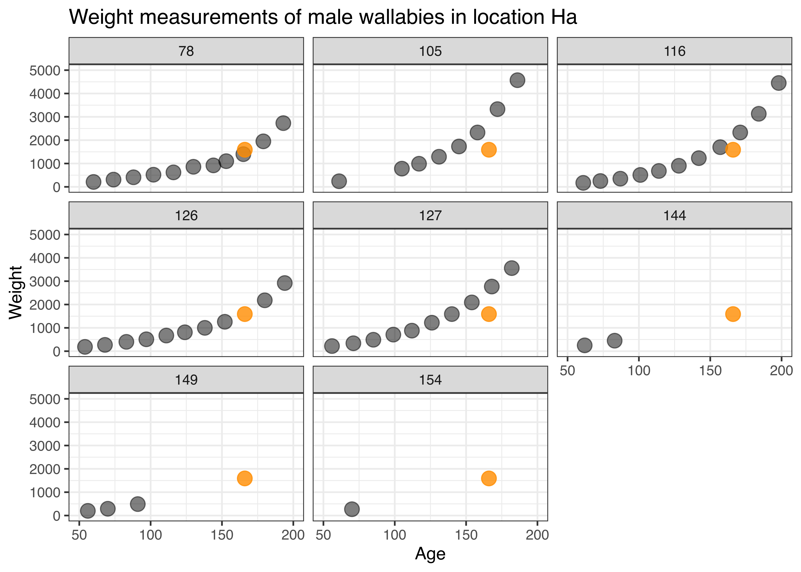
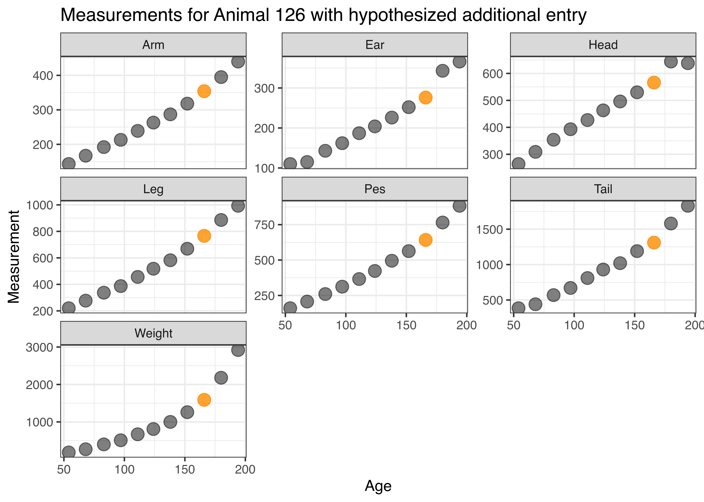

This chapter provides a bit of an ‘under-the-hood’ view of reshaping data and links it to some concepts in database design and data organization from the computer science view point.
Objectives
Understand the origin of fsome of the parameter names in data manipulation functions, such as
the parameters key and value in pandas.melt
why the long form of many data sets is called “tidy”
Determine the key variable(s) in a dataset
25.1 Introduction
Normal forms were developed in the 1970s by E.F. Codd as a theoretical framework to describe data structures in (relational) data bases. For the purpose of the considerations here, you can think of a data base as a bundle of data sets that are loosely connected - e.g. the data sets describe (different) aspects of the same objects, or they share some aspects (such as the same time or the same geography).
What we mean by a data set, is a spread-sheet style (rectangular) representation, with rows representing observations and columns representing variables. We will assume that the first row in the spread sheet contains the names of the variables. Similarly, we will assume there are no row names - any existing row names can be made into a column in the data set.
For the purpose of assessing the normal form of a data set. we distinguish between two types of variables: keys and non-key variables.
Key and Non-Key Variables
The key of a data frame is defined as the (set of) variable(s) that uniquely identifies each row.
Similarly, any variable that is not a key variable is a non-key variable.
There are various ways of recognizing key variables in a dataset: the easiest might be by their name; oftentimes a key variable is called an ‘identifier’, so watch out for variables with the letters ID in their name. Generally, the idea of a designed study and key variables are related: in a designed study, the combination of all design variables form a key. Any variables with values that are observed during the experiment, or collected after the study design is determined, are non-key variables.
In order to determine whether a set of variables forms a key, we will need to determine that there are no duplications in their combined values.
Demo: is it a key?
Let us assume, that we have the following dataset on measuring (repeatedly) different aspects and body parts of Wallabies. This data is part of the Australian data and story library OzDASL. See the help page for information about this data set and each of its variables.
library(knitr)wallaby<-read.csv("../data/wallaby.csv")head(wallaby)|>kable(caption="First few lines of the wallaby data.")
When determining whether this data set has a key, we might at first consider the variable Anim (animal number). However, the first couple of rows already show us that this variable is not uniquely describing a row/observation in the data. What about the combination of Anim and Age? In order for these two variables to be a key, their combination needs to be unique, i.e. for each animal, we can only have one set of measurements at any age. We can check whether that condition is fulfilled by tallying up the combination of Anim and Age.
library(dplyr)wallaby|>count(Anim, sort =TRUE)|>head()|>kable(caption="Anim by itself is not uniquely identifying rows in the data.")
Anim by itself is not uniquely identifying rows in the data.
Anim
n
53
50
45
49
47
49
57
49
55
47
65
42
Anim by itself is not a key variable, because for some animal ids we have multiple sets of measurements.
library(dplyr)wallaby|>count(Anim, Age, sort =TRUE)|>head()|>kable(caption="All combinations of animal ID and an animal's age only refer to one set of measurements.")
All combinations of animal ID and an animal’s age only refer to one set of measurements.
Anim
Age
n
44
8
1
44
22
1
44
43
1
44
63
1
44
77
1
44
91
1
The combination of Anim and Age uniquely describes each observation, and is therefore a key for the data set.
25.1.1 Benefits of Normal forms
Normal forms are used to describe the state that a particular data set is in – lower normal forms can always be transformed into higher forms. This process is called normalization of data. Normalizing data has various benefits:
Normalization
avoids data redundancies,
reveals inconsistencies,
simplifies the data design,
increases lookup speeds (in data bases),
and makes sets of data easier to maintain.
Most often we are only interested in the first three normal forms. For memorization you can think of these forms as going along with
Image of two keys as a memorization help for the three normal forms of data.
The key
The whole key
and nothing but the key
25.2 First Normal Form
A table is in first normal form if
every entry in the table is a single value, and
the table has a key.
Demo: Wallabies First Normal Form
Below is a snapshot of a reshaped version of the previous example, where all measurements for each animal are captured in the list variable measurements. While Anim now should be a key variable (presumably it uniquely identifies each animal), the data set is still not in first normal form, because the entries in the variable measurements are data sets by themselves, not just single values.
library(tidyr)wallaby2<-wallaby|>nest(.by =c("Anim", "Sex", "Loca"), .key="measurements")wallaby2|>head()## # A tibble: 6 × 4## Anim Sex Loca measurements ## <int> <int> <chr> <list> ## 1 45 1 G <tibble [49 × 9]>## 2 47 1 G <tibble [49 × 9]>## 3 53 2 G <tibble [50 × 9]>## 4 57 2 G <tibble [49 × 9]>## 5 65 2 G <tibble [42 × 9]>## 6 79 2 K <tibble [39 × 9]>
Is Anim the key variable of wallaby2? For that we check whether the Anim variable is unique - and find out that it is not unique!
wallaby2|>count(Anim, sort=TRUE)|>head()|>knitr::kable(caption="We see in the frequency breakdown of `Anim`, that the animal ID for 125 is used twice, i.e. 125 seems to describe two different animals. This would indicate that animal numbers do not refer to an individual animal as the data description suggests.")
We see in the frequency breakdown of Anim, that the animal ID for 125 is used twice, i.e. 125 seems to describe two different animals. This would indicate that animal numbers do not refer to an individual animal as the data description suggests.
Anim
n
125
2
44
1
45
1
46
1
47
1
48
1
This finding is a sign of an inconsistency in the data set - and just a first example of why we care about normal forms. Here, we identify the first entry in the results below as a completely different animal - it is male and lives in a different location. Most likely, this is a wrongly identified animal.
wallaby|>filter(Anim==125)|>head()|>knitr::kable(caption="Based on the listing for the values of animal 125, the very first entry does not fit in well with the other values.")
Based on the listing for the values of animal 125, the very first entry does not fit in well with the other values.
Anim
Sex
Loca
Leng
Head
Ear
Arm
Leg
Pes
Tail
Weight
Age
125
1
Ha
NA
566
276
354
766
642
1310
1590
166
125
2
H1
NA
112
NA
53
62
48
93
NA
10
125
2
H1
NA
166
54
80
112
79
156
NA
26
125
2
H1
NA
208
74
108
157
105
222
NA
38
125
2
H1
NA
255
104
134
204
147
326
160
52
125
2
H1
NA
301
117
160
260
187
389
240
66
Some detective work shows us that the additional entry for animal 125 is probably a missing entry for animal 126.
With a bit of detective work, we can identify animal 126 as the most likely candidate for the set of measurements wrongly attributed to animal 125 (see Figure 25.1). The orange point corresponds to the entry wrongly assigned to animal 125. Its timing (Age) and value (Weight) make it the best fit for animal 126.

Figure 25.1: Scatterplots of Weight by Age, facetted by animal number. Only male specimen in location Ha are considered. The orange point shows the measurements of the entry wrongly assigned to animal 125 (which is female and lives in a different location).
In Figure 25.2 all measurements for wallaby 126 are shown by age (in days) when they were taken. The additional measurement wrongly assigned to animal 125 is shown in orange. All of the values are sensible within the grow curves of animal 126.

Figure 25.2: Growth curves of animal 126 for all the measurements taken between days 50 and 200. In orange, the additional entry for animal 125 is shown. The values are consistent with animal 126’s growth.
Cleaning the Wallaby data
As a direct result of the normalization step, we make a change (!!!) to the orignial data.
Making any changes to a dataset should never be done light-heartedly, always be well argued and well-documented. For the present example, we keep the above investigation as argument, and the code to show the exact nature of the cleaning step.
25.3 Second Normal Form
A data set is in second normal form if
it is in first normal form, and
all non-key variables depend on all parts of the key (no split key).
Note, that tables in 1st normal form with a single key variable are automatically in 2nd normal form.
Regarding the example of the wallaby dataset, we see the dataset in its basic form is not in 2nd normal form, because the two non-key variables Sex (biological sex of the animal) and the animal’s location (Loca) only depend on the animal number Anim, and not on the Age variable.
wallaby2|>group_by(Anim)## # A tibble: 78 × 4## # Groups: Anim [77]## Anim Sex Loca measurements ## <int> <int> <chr> <list> ## 1 45 1 G <tibble [49 × 9]>## 2 47 1 G <tibble [49 × 9]>## 3 53 2 G <tibble [50 × 9]>## 4 57 2 G <tibble [49 × 9]>## 5 65 2 G <tibble [42 × 9]>## 6 79 2 K <tibble [39 × 9]>## 7 81 2 K <tibble [36 × 9]>## 8 87 1 G <tibble [34 × 9]>## 9 92 2 G <tibble [28 × 9]>## 10 93 2 W <tibble [28 × 9]>## # ℹ 68 more rows
25.3.1 Normalization: 1st NF to 2nd NF
We can bring any data set that is in 1st normal form into second normal form by splitting the data set into two parts: all non-key elements that only depend on a part of the key are moved into a second data set, together with a copy of the part of the key that those elements rely on. All duplicate rows in the second dataset then need to be removed.
This construction results in two tables that are in 2nd normal form.
Demo: Getting the wallaby data into 2nd normal form
In the example of the wallaby data, we have identified the non-key variables Sex and Loca to only depend on the animal’s number - i.e. the values of these variables are animal-specific demographics, that do not change over the course of their lifetime.
We separate those variables into the data set wallaby_demographics and reduce the number of rows by finding a tally of the number of rows we summarize.
wallaby_demographics<-wallaby_cleaner|>select(Anim, Sex, Loca)|>count(Anim, Sex, Loca)# Don't need the total number
Once we have verified that Anim is a key for wallaby_demographics, we know that this table is in 2nd normal form.
With the key-splitting variables Sex and Loca being taken care of in the second dataset, we can safely remove those variables from the original data. To preserve the original, we actually create a separate copy called wallaby_measurements:
wallaby_measurements<-wallaby_cleaner|>select(-Sex, -Loca)wallaby_measurements|>head()## Anim Leng Head Ear Arm Leg Pes Tail Weight Age## 1 45 NA 123 NA 59 69 59 93 NA 14## 2 45 NA 178 54 90 120 92 185 NA 28## 3 45 NA 250 92 130 210 142 307 NA 49## 4 45 NA 324 108 174 284 205 454 290 69## 5 45 NA 369 129 198 340 257 568 410 83## 6 45 NA 408 155 237 411 308 648 570 97
The wallaby_measurements dataset has the combination of Anim and Age as a key, and all of the variables are measurement that depend on both the animal and its age. This data set is therefore also in second normal form.
In the normalization process we spotted one inconsistency (animal 125), which we resolved earlier, and we reduced the overall size of the data has been reduced from 12 x 1463 = 17,556 to the sum of 4 x 77 = 308 and 10 x 1463 = 14,630 for the wallaby_demographics and the wallaby_measurements data, respectively.
Third Normal Form
A table is in third normal form if
the table is in 2nd normal form, and
no non-key variable determines the values of another non-key variable.
Being able to determine whether any (combination of) non-key variables determine(s) the values of other non-key variables is a hard task. We would need to be the data experts in a lot of areas, and even then we might miss some dependencies and declare a table to be in third normal form when, in fact, it is not.
Rather than this form of the third normal form, we often employ a stricter normal form that only allows a single non-key variable to ensure that there are no dependencies left between non-key variables. This form is also called key-value pairs
25.3.2 Key-Value Pairs (KVP)
A table is in key-value representation if
the table is in 2nd form, and
there is only a single non-key column.
Now we are finally at the point that we are connecting to the previous section on reshaping data. The way to bring data into key-value representation, is a transformation from a wide data form to a long form as described in Section 24.3 on pivot operations.
Demo: Wallaby key-value-pairs
In the previous section, we separated the original wallaby data into two parts: the wallaby_demographics and wallaby_measurements data sets.
There are two different ways of bringing datasets into key-value pairs using these datasets.
Another approach to bringing a dataset into key-value pairs is to summarize the values of a set of variables by introducing a new key for the variable names.
wallaby_measurements_long<-wallaby_measurements|>pivot_longer(cols ='Leng':'Weight', names_to="Traits", values_to="Measurements", values_drop_na =TRUE)dim(wallaby_measurements_long)## [1] 9905 4head(wallaby_measurements_long)## # A tibble: 6 × 4## Anim Age Traits Measurements## <dbl> <int> <chr> <int>## 1 45 14 Head 123## 2 45 14 Arm 59## 3 45 14 Leg 69## 4 45 14 Pes 59## 5 45 14 Tail 93## 6 45 28 Head 178
By specifying values_drop_na as TRUE we exclude all measurements that could not be taken, such as Weight for about the first 50 days of age, and Leng for the animal until the joey is ready to leave the safety of the pouch. Note, that while this normalization step might save space, the structural nature of missing values might be further hidden.
Another approach to bringing a dataset into key-value pairs is to summarize the values of a set of variables by introducing a new key for the variable names.
Missing values in the R data set are interpreted as the value -2147483648 in python. We need to ensure that we remove all of these values (or convert them to NaN)
25.4 Next steps
Units of measurements
Investigation of missing values: missing at random?